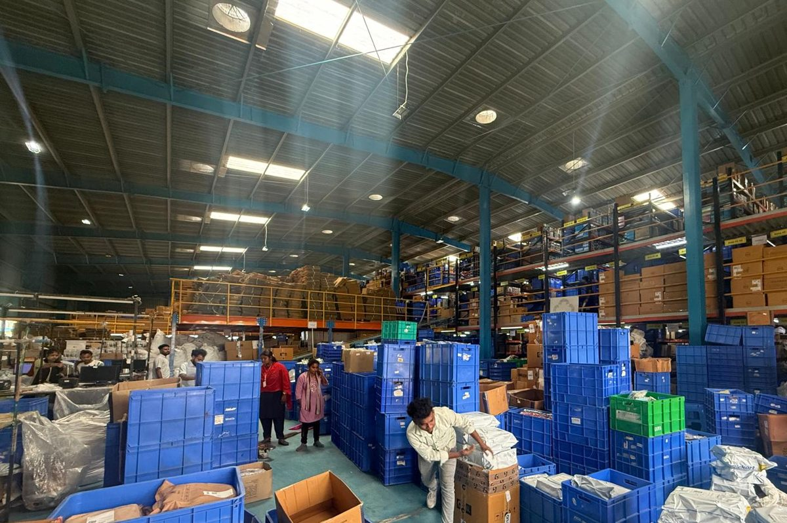

Piqit Platforms
Finance & Operations InternRuns sourcing, fulfillment and commerce operations for fashion and lifestyle brands.
Every week, I made the marketplaces' numbers agree on what each brand was owed.


I wasn't sure about doing my internship at a startup. It turned out to be one of the most important experiences of my life.
I wasn't given intern work. I was given real responsibility: settlements one week, a market study the next, an ad after that, and I loved doing all of it. What I'll remember most is that even as an intern, my voice was heard.
- Across the business: finance, warehouse operations, marketing and research, often in the same week.
- Finance: reconciled weekly marketplace settlements for brands including Gap and Lee Cooper, across India's major marketplaces: Myntra, Flipkart, AJIO, Nykaa Fashion and Tata CLiQ.
- Research: wrote a market entry study for a client brand.
- Content: made an AI ad, from screenplay to final cut, that leadership took into a client pitch.
Excel · Increff · Seedance on OpenArt
Try it · How a settlement balancesTwo marketplaces sell the same ₹1,00,000 of a brand's clothes. Does the brand get paid the same?
Each marketplace has its own discounts, fees, returns rules and payout cycle. My weekly work was taking every marketplace's statement and making it land on one correct number for each brand.
Illustrative numbers, not Piqit's or any brand's.